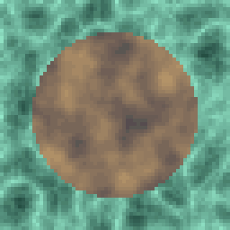
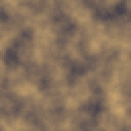
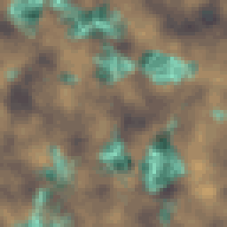
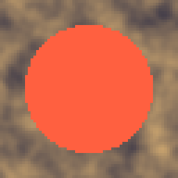
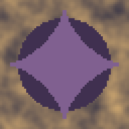

Six ways to combine two images or route between alternatives. Blend itself carries the nineteen compositing modes any paint program has, plus a mask trick for when only one input is wired. Switch and Multi Switch are not compositing at all, they route: whichever input the selector names passes through untouched. Height Blend, Paint and Layer Stack are the more specific tools, for a physically grounded terrain mix and for laying flat tones through masks rather than mixing two full textures.
Everything here treats a missing input the same way: transparent, or a passthrough of whichever side is still wired, never an error. That is what lets a graph stay renderable while it is half built.

Composites two images with nineteen modes, or masks a lone one with its Opacity input.
The workhorse compositor: two images through nineteen modes at an Opacity, the same vocabulary a paint program's layer panel uses (Normal, Multiply, Screen, Overlay, the HSL group, Difference, and the rest). Wire only Top or only Base and it stops blending and starts masking: with an Opacity input plugged in, the lone image is cut by that map's luminance times its own alpha; with nothing on Opacity it passes the lone image through untouched, so an unfinished graph never goes silently blank.
Dissolve is worth calling out on its own: instead of mixing colors it flips a per-pixel coin, weighted by Opacity and by the mask if one is wired, and shows Top whole or Base whole at each pixel, a scatter rather than a blend, the way it behaves in most paint programs too.
I default to Multiply at 30-60% for grime over a base texture, Overlay for a cheap contrast boost, and Normal under 100% wherever a soft crossfade is all that is needed.
In: Top (image), Base (image), Opacity (image) · Out: image
Parameters

Lets one of its two inputs through, whichever the selector names.
A one-of-two router: Input picks which of its two wired inputs reaches the output, and both are typed any, so a Switch passes a palette or a curve exactly as well as an image. Everything upstream of both inputs still evaluates (the graph has one shared memo across the whole thing), so a Switch does not save render time, only picks which branch gets used.
It earns its place wherever a recipe has two legitimate versions of the same idea and you want to compare or key between them without rewiring: two different noise seeds for a texture set, a daytime and a nighttime palette, a rough draft feeding one branch of a graph while a slower final version feeds the other. Keyed on the timeline, Input stepping from 1 to 2 is a hard cut rather than a crossfade, which matters when a Blend's Dissolve or Normal mode is not what you want there.
An unwired slot reads as fully transparent, the same as any other missing input, rather than an error.
In: Input 1 (any), Input 2 (any) · Out: image
Parameters
Lets one of its six inputs through, whichever the selector names.
The same router as Switch, with six inputs instead of two, for a recipe with more than one alternative worth naming: a set of five candidate noise seeds picked at build time, or six palette variants swept one at a time while judging which reads best.
Input is 1-based and, like Switch, keeping it as a keyed value turns the node into a slideshow along the timeline rather than a single fixed pick, useful for a quick side-by-side render of every branch without rewiring the graph six times over. Every one of the six upstream branches still evaluates whether or not it is the one selected, since nothing here prunes the graph, only the final choice of which buffer reaches the output.
I reach for this over six separate Switch nodes chained together mostly for the panel: one combo naming six options reads at a glance, where a tree of twos does not.
In: In 1 (any), In 2 (any), In 3 (any), In 4 (any), In 5 (any), In 6 (any) · Out: image
Parameters

Mixes two textures letting the taller one win; also does snow and water.
Mixes two textures by which one is physically taller at each pixel rather than by a fixed mask, which is what makes a rock-and-snow or a puddle-and-ground transition look grown rather than painted on. Wire Height A and Height B (grayscale, white is high) alongside the color textures A and B; with only one height wired the other reads as flat mid-gray, so B wins wherever its height beats that flat plane.
Mode Height is the plain comparison, A shows through wherever its height reads higher than B's, offset by Offset / level. Snow reads the slope of Height A instead: it covers the flatter, upward-facing parts of A and leaves steep faces bare, the difference between snow and a plain height blend, since real snow settles on ledges rather than cliffs. Water floods B in wherever Height A drops below a level set by Offset / level, for a puddle or a flooded lowland rather than a ridge line.
Contrast narrows or widens the transition band between the two textures, from a hard cutoff to a wide, soft graded mix.
In: A (image), B (image), Height A (image), Height B (image) · Out: image
Parameters

Fills the masked pixels with one flat colour.
Fills whatever a Mask covers with one flat Color, at an Opacity, over a Base it leaves untouched everywhere else. It is the simple half of what Layer Stack does four times over, and the one to reach for when a recipe needs exactly one more flat tone laid over a texture rather than a whole ramp of them: a rust patch over metal, a moss patch over stone, a highlight swatch over a gem.
The mask reads as luminance weighted by its own alpha, the same convention Blend's Opacity input and Alpha's Set mode both use, so a soft white stamp with a Gaussian falloff paints a soft-edged patch of color rather than a binarized stencil, and a mask that is only half-opaque paints at half strength even where it is pure white. Invert mask swaps which side gets painted without routing the mask through a separate Invert node first.
I chain two or three of these when Layer Stack's fixed four slots do not fit a recipe's own logic, one Paint at a time, each layered over the last.
In: Base (image), Mask (image) · Out: image
Parameters

Paints up to four flat tones through four masks, bottom to top.
Four flat tones through four masks, painted bottom to top over a Base, which is Paint's job done four times in one node instead of a chain of four. Each mask is independent and each has its own Enabled check, so turning a layer off for a preview does not require unplugging its wire.
Order matters the way it does in any layered image: Mask 4 paints last and covers whatever Mask 1 through Mask 3 already laid down wherever the two masks overlap, so put the broadest base tone (a rock's shadow color, a leaf's base green) on Mask 1 and the narrowest highlight (a rim light, a vein) on Mask 4. Unlike Paint's own Opacity row, every layer here paints at a fixed full strength (through the mask's own luminance and alpha), so grading a layer's coverage is the mask's job, not a slider on this node.
Four masks stacked this way is close to how Substance or Material Maker call a layer stack node, and it is the one I reach for first when a recipe needs more than two flat tones over one base texture.
In: Base (image), Mask 1 (image), Mask 2 (image), Mask 3 (image), Mask 4 (image) · Out: image
Parameters